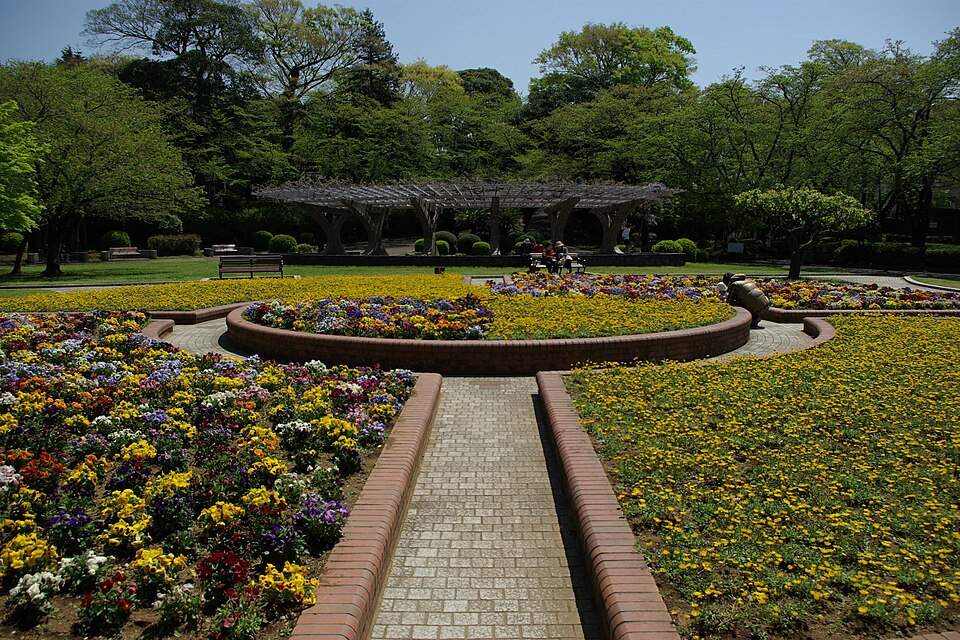
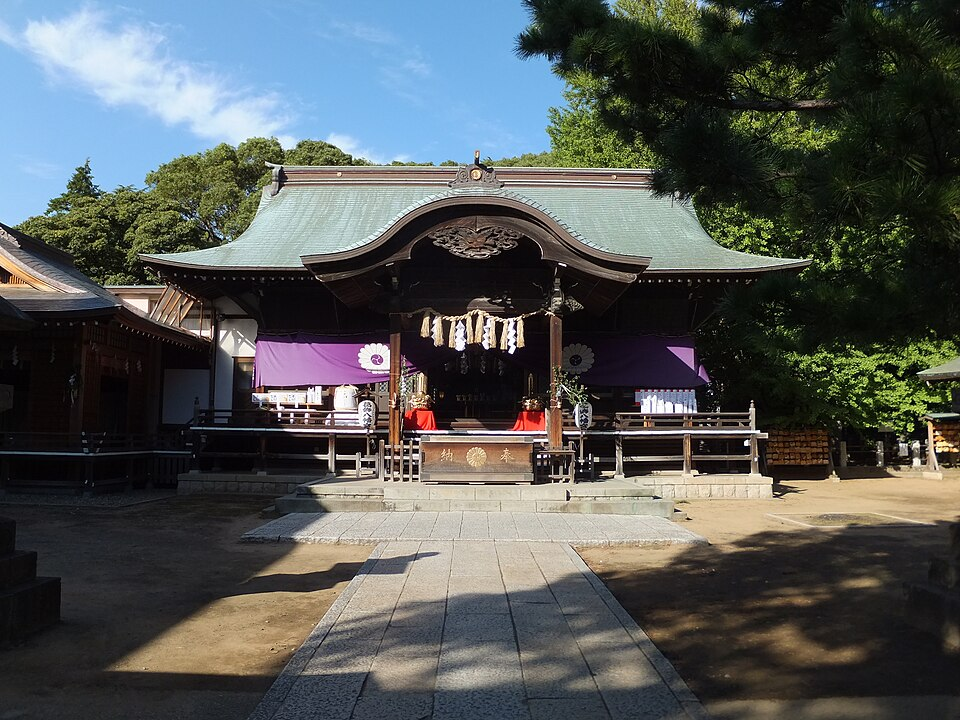
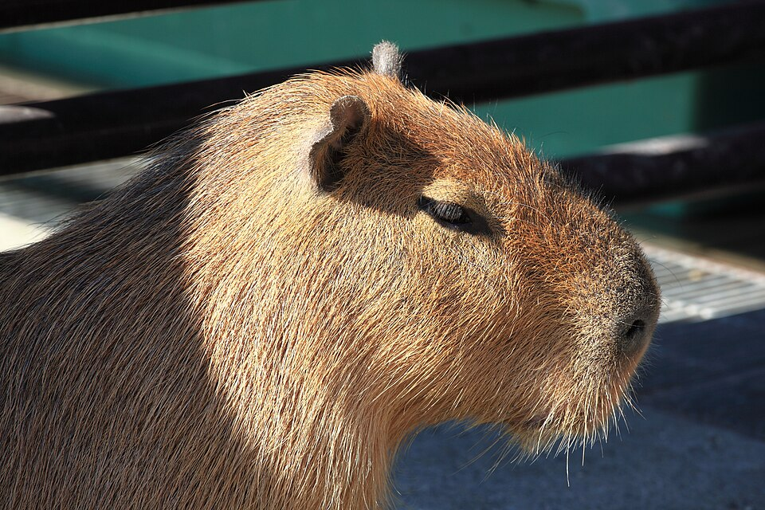
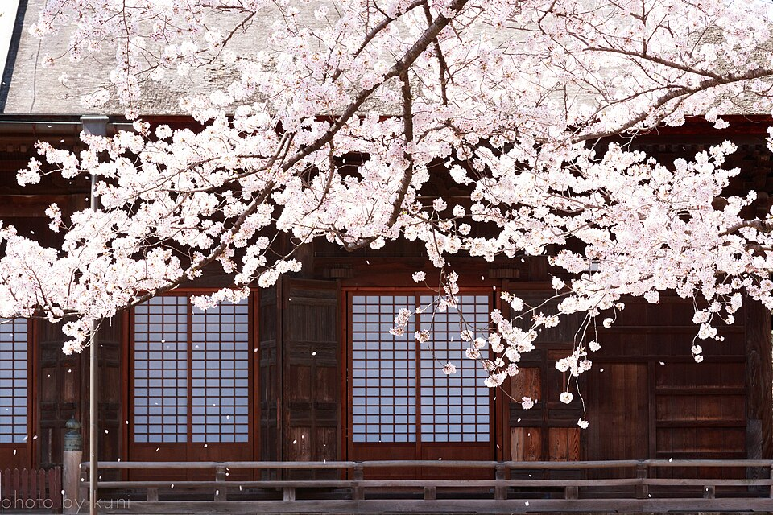

TAKE IT SLOW
寄り道しながら、
市川を歩く。
予定を詰めこまない日こそ、まちの表情が見えてくる。歴史ある場所を訪ねたり、緑の中でひと息ついたり。季節の味にも出会えたら、きっといい一日。
- 01寺社の門前を歩く静かな朝の空気を楽しむ
- 02緑の中でひと休み公園で季節の景色を探す
- 03旬の味をおみやげに季節が合えば梨の直売所へ
CHIBA · ICHIKAWA
川辺を歩いて、古い社に立ち寄って、旬の味をひとくち。東京のすぐ隣にある、ゆったりした市川の魅力をご案内します。
市川の見どころをめぐるA LITTLE INTRODUCTION
江戸川の水辺から、緑に包まれた公園、歴史を感じる寺社まで。 市川には、少し足をのばすだけで出会える風景があります。 季節ごとの梨や、駅ごとに表情の違うまち並みも楽しみのひとつ。 気の向くままに歩いて、自分だけのお気に入りを見つけてみませんか。
FIND YOUR ICHIKAWA
のんびり散歩も、歴史めぐりも。気になる場所から出かけてみよう。





TAKE IT SLOW
予定を詰めこまない日こそ、まちの表情が見えてくる。歴史ある場所を訪ねたり、緑の中でひと息ついたり。季節の味にも出会えたら、きっといい一日。
YOUR NEXT LITTLE ADVENTURE
見慣れた毎日から、少しだけ寄り道を。
見どころをもう一度見る